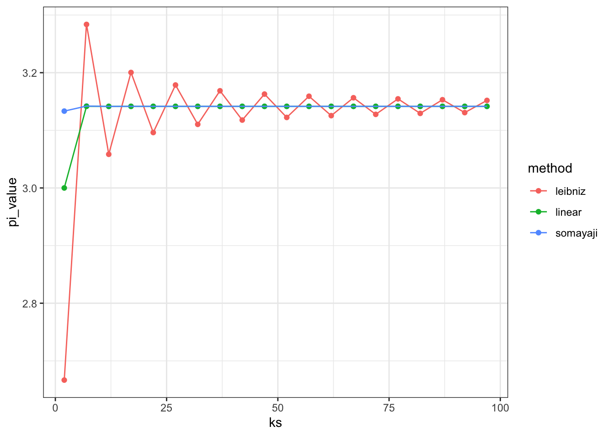

frac_maker <- function(n, d){
force(n)
force(d)
function(x) n / (d + x)
}Over the summer, some of us here at UBC started a reading group based around Hadley Wickham’s book, Advanced R Programming. The goal was to compare our answers to the exercises and our impressions of the content.
We recently read my favourite chapter, Functionals, where readers are challenged to read about some algorithms in Structure and Interpretation of Computer Programs, and implement it in R.
I wanted to share some functions I wrote to calculate these exotic things called k-term finite continued fractions, based on that challenge:
continued fractions
Continued Fractions look like this:
\[ \frac{n_1}{d_1 + \frac{n_2}{d_2 + \frac{n_3}{d_3 + \cdots } } } \]
and have an infinite number of \(n\) and \(d\) values. However, if after \(k\) values you just replace the remaining ones (the \(...\) above) with 0, then you get a k-term finite continued fraction, which is maybe close enough:
\[ \frac{n_1}{d_1 + \frac{n_2}{\ddots + \frac{n_k}{d_k}}} \]
Continued fractions have the values of \(n\) and \(d\) defined by a series. We need a function that will take the series for the numerator and denominator, calculate \(k\) terms, and put them together into a continued fraction.
So, how do we calculate this in R? Well, it turns out we can apply two concepts we learned from Wickham’s book to do so: closures and functionals.
Creating a series of closures
We could say that each “part” of the continued fraction was a unit that looks like
\[ \frac{n}{d + x} \]
where \(n\) and \(d\) are a “pair” of numerator and denominator, and \(x\) is the next “part”, and so on. (there are probably mathematical terms for these, but I’m an ecologist, not a mathematician!). If you “build” the continued fraction from the inside out, you’d start with \(x = 0\), and calculate \(\frac{n_k}{d_k}\). Then you move on to \(n_{k-1}\); for this fraction you have the numerator-denominator pair, plus the term (\(x\)) which you just calculated.
We can use closures to calculate each of these “parts” in turn, in order to keep the numerator-denominator pairs together. Closures are functions which are created by other functions; they “enclose” the environment in which they were created (hence the name), which means they can use variables from that environment (in our case, the values of a numerator & denominator)
First, we make a “function factory”, a function which creates other functions (closures which retain different values of \(n\) and \(d\)):
This function takes a pair of numbers and defines a new function which uses them. But how can we create lots of closures, one for every numerator-denominator “pair” between 1 and \(k\)? We can use the function Map to run this function on each variable pair. Map works like a zipper, combining the first elements of two (or more) vectors with a function, then the second, etc. For example, the reciprocal of the Golden Ratio is the result of a continued fraction where \(n\) and \(d\) are both 1:
Ns <- rep(1, 20)
Ds <- rep(1, 20)
funs <- Map(frac_maker, Ns, Ds)funs is now a list of functions, each one remembering its own particular value of \(n\) or \(d\). Now all we need to do is put them together and run them all. For that, we need another functional: Reduce.
using Reduce
Reduce is just lovely. It takes a vector and “reduces” it to a single number by applying a function: the first two arguments are the first and second vector elements, then the result of that calculation and the third element, then that result and the fourth element:
Reduce(sum, c(1, 2, 3, 4)) = sum(sum(sum(1, 2), 3), 4)Here we have a list of functions, not values, so we use Reduce to run a function that simply executes its second argument on its first:
answer <- Reduce(function(f1,f2) f2(f1), x = funs, init = 0)
## take reciprocal to get the Golden Ratio:
1/answer[1] 1.618034We start with the value of 0, because as we said the approximation of the continuous fraction simply replaces all the the “parts” after \(k\) with 0. So our function runs the first function on 0, the second function on that result, the third function on that result, etc. The result is the whole approximation of a continuous fraction, “built” from the inside out.
combine into a function
So now we combine this to form a single function that calculates the value of a continuous series for \(k\) terms:
continuous_frac <- function(Ns, Ds, frac_fun = frac_maker){
Ns <- rev(Ns)
Ds <- rev(Ds)
funs <- Map(frac_fun, Ns, Ds)
Reduce(function(f1,f2) f2(f1), x = funs, init = 0)
}Note that we have to reverse the series Ns and Ds, simply because the series are usually defined from \(n_1\) to \(n_k\), but we are building our function from \(n_k\) backwards.
calculating numbers
With this function in hand, we can approximate any continued fraction. Here are a few examples:
The value of \(e\) (for biological content)
Are you wondering what all this has to do with biology? Well, Euler’s number certainly appears in plenty of biological models, so let’s calculate it:
denominator <- function(k){
nums <- lapply(seq_len(k)*2, function(x) c(1, 1, x))
out <- do.call(c, nums)
out[-1]
}
2 + continuous_frac(Ds = denominator(20), Ns = rep(1, 3 * 20 -1))[1] 2.718282calculating \(\pi\)
There are several ways to calculate \(\pi\), based on different forms of this equation. Apparently they converge at different rates. here are some examples:
leibniz <- function(k){
seqs <- seq(from = 1, by = 2, length.out = k -1)
N <- c(4, seqs ^ 2)
D <- c(1, rep(2, k-1))
continuous_frac(N, D)
}
somayaji <- function(k){
N <- seq(from = 1, by = 2, length.out = k) ^ 2
D <- rep(6, k)
3 + continuous_frac(N, D)
}
linear <- function(k){
N <- seq(from = 1, by = 1, length.out = k -1) ^ 2
N <- c(4, N)
D <- seq(from = 1, by = 2, length.out = k)
continuous_frac(N, D)
}
library(dplyr)
library(tidyr)
library(ggplot2)
data.frame(ks = seq(2, 100, by = 5)) %>%
rowwise %>%
mutate(leibniz = leibniz(ks),
somayaji = somayaji(ks),
linear = linear(ks)) %>%
gather(method, pi_value, -ks) %>%
ggplot(aes(x = ks, y = pi_value, colour = method)) + geom_point() + geom_path() + theme_bw()
If we zoom in we can see that the third form outperforms Somayaji’s:
data.frame(ks = seq(5, 10, by = 1)) %>%
rowwise %>%
mutate(somayaji = somayaji(ks),
linear = linear(ks)) %>%
gather(method, pi_value, -ks) %>%
ggplot(aes(x = ks, y = pi_value, colour = method)) + geom_point() + geom_path() + xlab("k") + ylab(expression(pi)) + theme_bw()